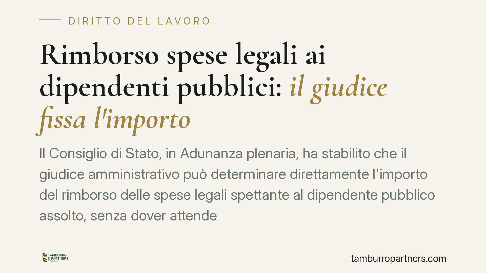
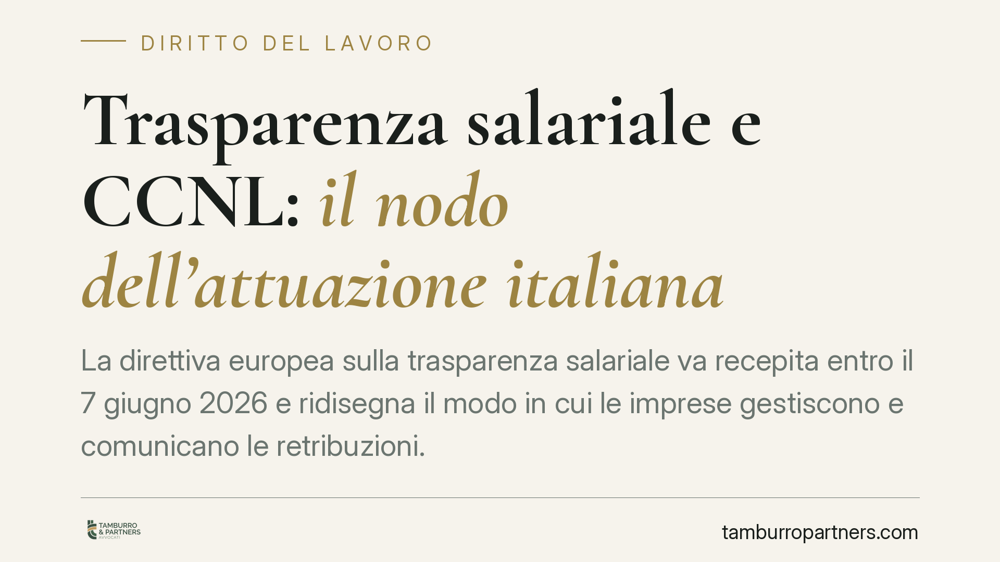
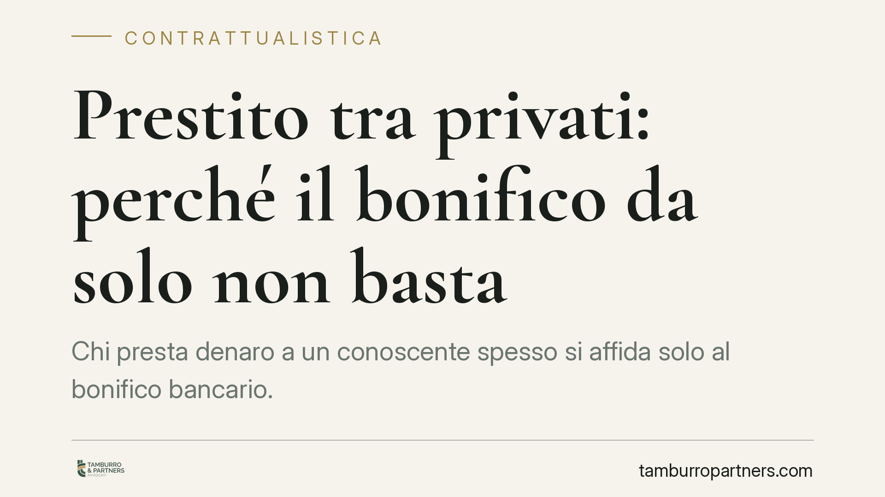
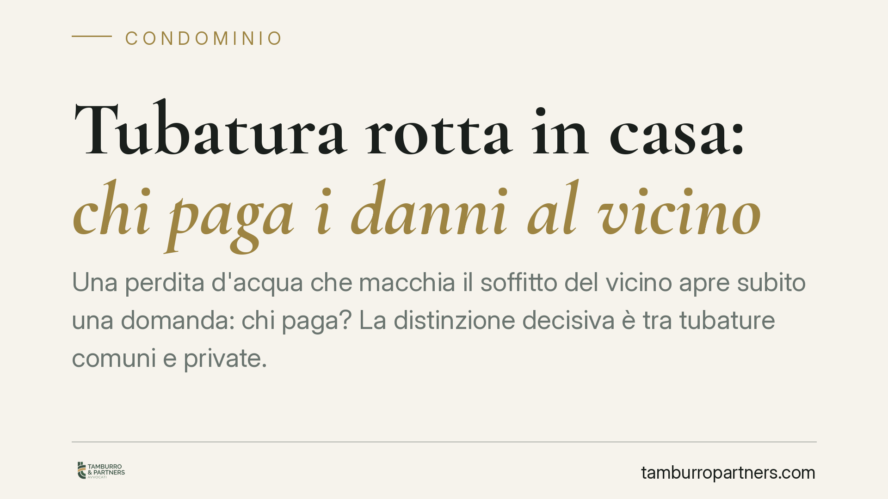
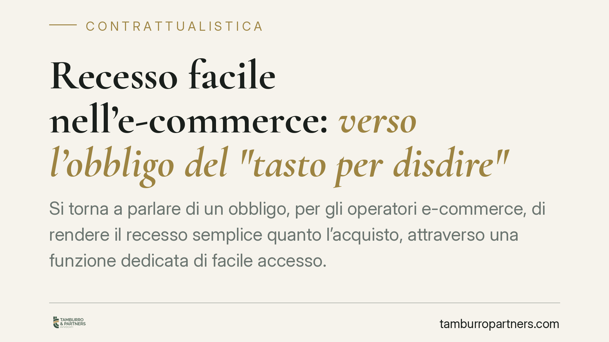
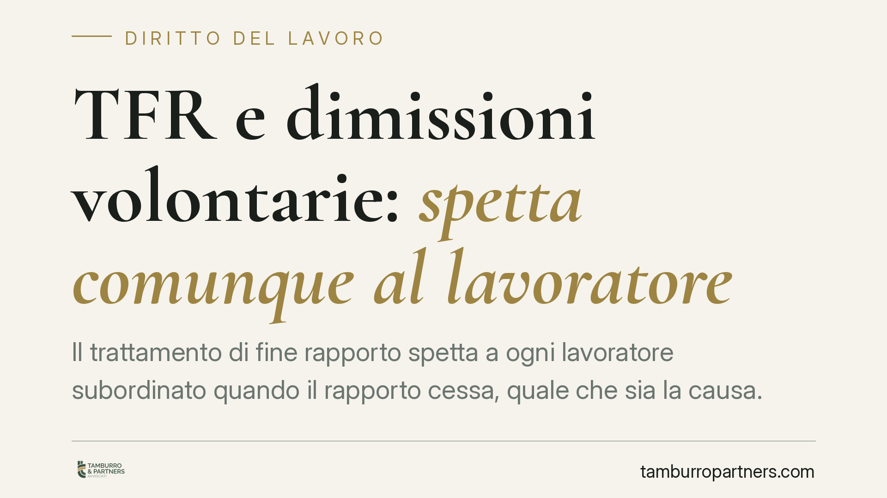
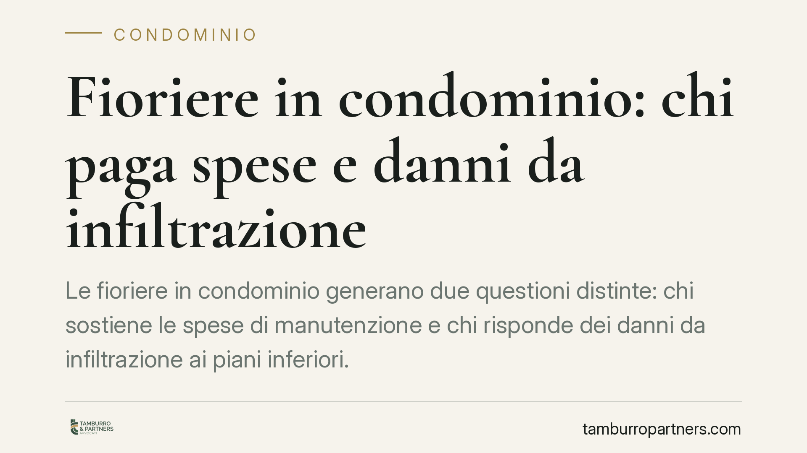
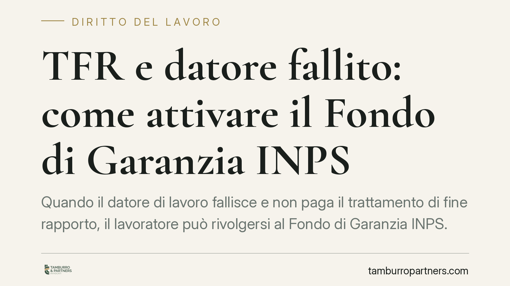
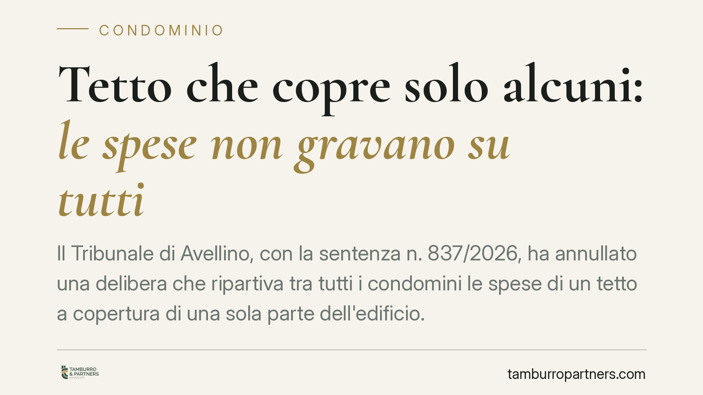

Ritardo nella consegna: quando spetta davvero il risarcimento
Un bene consegnato in ritardo non basta, da solo, a fondare un risarcimento. La Cassazione ribadisce che chi lamenta il ritardo deve provare un danno concreto e direttamente colleg…
Licenziamento disciplinare e proporzionalità: quando la sanzione è sproporzionata
La proporzionalità tra infrazione e sanzione resta il cardine del licenziamento disciplinare. Quando il contratto collettivo punisce quella condotta con una misura conservativa, il…

Rimborso spese legali ai dipendenti pubblici: il giudice fissa l'importo
Il Consiglio di Stato, in Adunanza plenaria, ha stabilito che il giudice amministrativo può determinare direttamente l'importo del rimborso delle spese legali spettante al dipenden…
Mala gestio dell'amministratore: senza prove il condominio perde
Il condominio che agisce contro l'ex amministratore per cattiva gestione deve dimostrarla con documenti precisi. Una recente pronuncia del Tribunale di Roma ha respinto la domanda …
Morosità condominiale e privacy: chi può conoscere i dati del debitore
Chi ha diritto di sapere se un condomino non paga le spese comuni? La domanda tocca due interessi in tensione: la trasparenza gestionale e la riservatezza del debitore. Tra l'obbli…

Trasparenza salariale e CCNL: il nodo dell'attuazione italiana
La direttiva europea sulla trasparenza salariale va recepita entro il 7 giugno 2026 e ridisegna il modo in cui le imprese gestiscono e comunicano le retribuzioni. Al centro dell'at…
Swap banca-ente locale: la Cassazione sul riconoscimento della sentenza inglese
La Corte di Cassazione torna sui derivati stipulati dagli enti locali con controparti bancarie estere, questa volta sotto il profilo del riconoscimento in Italia di una sentenza in…

Prestito tra privati: perché il bonifico da solo non basta
Chi presta denaro a un familiare o a un amico spesso si limita a un bonifico. Ma se il rapporto si guasta e occorre chiedere la restituzione, quella traccia bancaria può non bastar…
Vendite benefiche e trasparenza: i nuovi obblighi di rendicontazione
Una nuova disciplina impone a chi promuove vendite a scopo benefico di indicare con precisione beneficiario, finalità e quota devoluta. La regola tocca produttori, distributori, az…
Accesso ai dati dei condomini morosi e alle cause legali: cosa dice la legge
Ogni condomino ha diritto di sapere chi non paga e quali contenziosi pendono sulle parti comuni. La legge impone all'amministratore obblighi precisi di trasparenza, ma pone anche l…
Patto di non concorrenza nullo se l'area geografica è generica
Il Tribunale di Milano ha dichiarato nullo un patto di non concorrenza per l'indeterminatezza del limite geografico. La decisione, che riguardava un private banker, ribadisce un pr…
Veranda del vicino sul terrazzo: serve il consenso del confinante?
La chiusura di un terrazzo con una veranda tocca due piani distinti: quello privatistico dei rapporti tra condomini e quello pubblicistico del titolo edilizio. Chi teme di subire u…
Controllo della posta elettronica aziendale: quali limiti per il datore
Il datore di lavoro può controllare la posta elettronica aziendale del dipendente, ma entro confini precisi. Statuto dei lavoratori, GDPR e giurisprudenza tracciano una linea netta…
Fotovoltaico sul tetto condominiale: regole e limiti di installazione
Il singolo condomino può installare un impianto fotovoltaico sul tetto comune, ma il diritto non è illimitato. L'art. 1122-bis c.c. lo consente e affida all'assemblea alcune prerog…
Ringhiera e distanze legali: costruzione o recinzione?
Installare una ringhiera lungo il confine può innescare contenziosi tra vicini e in condominio. La qualificazione del manufatto - costruzione o mera recinzione - decide se si appli…
Contabilizzatori di calore: l'assemblea può imporre la sostituzione?
L'obbligo di contabilizzazione individuale del calore, imposto dal d.lgs. 102/2014, comporta la manutenzione e la periodica sostituzione dei dispositivi. Ci si chiede se l'assemble…
Rifacimento del tetto condominiale: chi paga e in che misura
Chi abita in una porzione dell'edificio non sovrastata dal tetto deve pagare meno per il suo rifacimento? La risposta, in via ordinaria, è no. Il tetto protegge l'intero fabbricato…
Controllo dei dipendenti tramite colleghi: limiti e cautele
Il datore di lavoro può incaricare un collega di osservare i comportamenti di un dipendente? Un recente orientamento della Cassazione ammette questa forma di vigilanza, ma entro co…

Tubatura rotta in casa: chi paga i danni al vicino
Una perdita d'acqua che macchia il soffitto del vicino apre subito una domanda: chi paga? La distinzione decisiva è tra tubature comuni e private. Quando il guasto è in proprietà e…
Rappresentante dei lavoratori per la sicurezza (RLS): ruolo, compiti e tutele
Il Rappresentante dei Lavoratori per la Sicurezza (RLS) è il canale attraverso cui i lavoratori partecipano alla gestione della prevenzione in azienda. La funzione di rappresentanz…

Recesso facile nell'e-commerce: verso l'obbligo del "tasto per disdire"
Si torna a parlare di un obbligo, per gli operatori e-commerce, di rendere il recesso semplice quanto l'acquisto, attraverso una funzione dedicata di facile accesso. Il tema si ins…

TFR e dimissioni volontarie: spetta comunque al lavoratore
Il trattamento di fine rapporto spetta a ogni lavoratore subordinato quando il rapporto cessa, quale che sia la causa. Anche le dimissioni volontarie non fanno eccezione: la scelta…

Fioriere in condominio: chi paga spese e danni da infiltrazione
Le fioriere in condominio generano due questioni distinte: chi sostiene le spese di manutenzione e chi risponde dei danni da infiltrazione ai piani inferiori. La risposta cambia a …

TFR e datore fallito: come attivare il Fondo di Garanzia INPS
Quando il datore di lavoro fallisce e non paga il trattamento di fine rapporto, il lavoratore può rivolgersi al Fondo di Garanzia INPS. Una recente pronuncia del Tribunale di Lagon…

Tetto che copre solo alcuni: le spese non gravano su tutti
Il Tribunale di Avellino, con la sentenza n. 837/2026, ha annullato una delibera che ripartiva tra tutti i condomini le spese di un tetto a copertura di una sola parte dell'edifici…
Recupero crediti dai morosi: quando risponde l'amministratore di condominio
L'amministratore di condominio ha l'obbligo di attivarsi per recuperare i contributi non versati, senza attendere l'autorizzazione dell'assemblea. La giurisprudenza conferma che l'…
Dimissioni del lavoratore: quando serve la forma scritta
Rassegnare le dimissioni non è mai un gesto informale. Dal 2016 la legge impone una procedura telematica obbligatoria, che ha di fatto sostituito la vecchia lettera consegnata a ma…
Direttore dei lavori e difetti dell'opera: quando risponde con l'impresa
La giurisprudenza conferma che il direttore dei lavori può rispondere in solido con l'impresa appaltatrice per i difetti dell'opera. Non basta delegare l'esecuzione al costruttore:…
Spese condominiali e casa familiare assegnata: chi paga?
Il coniuge separato che vive nella casa familiare assegnata dal giudice è tenuto a pagare le spese condominiali direttamente al condominio? La Cassazione risponde di no: l'assegnaz…
Canone concordato e cedolare al 10%: opportunità o rendita per i soli proprietari?
Il canone concordato, sostenuto dalla cedolare secca al 10%, viene presentato come strumento di calmieramento degli affitti. In alcuni mercati, però, produce rendite non lontane da…